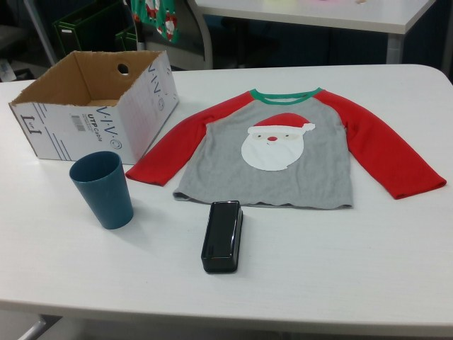
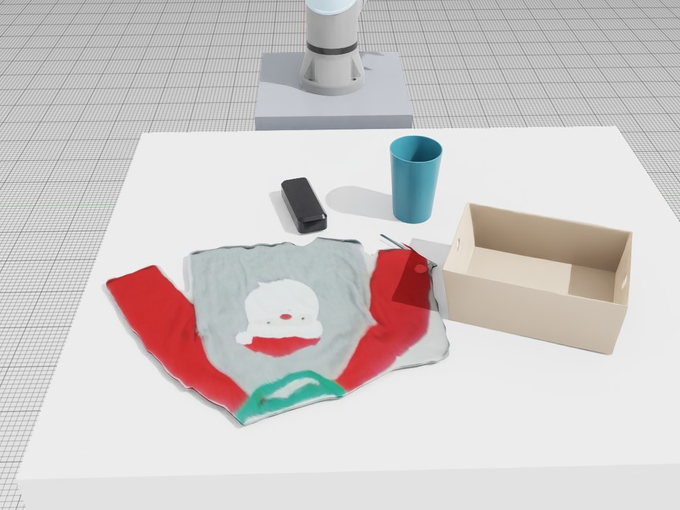
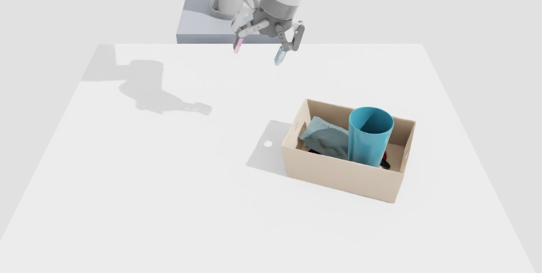
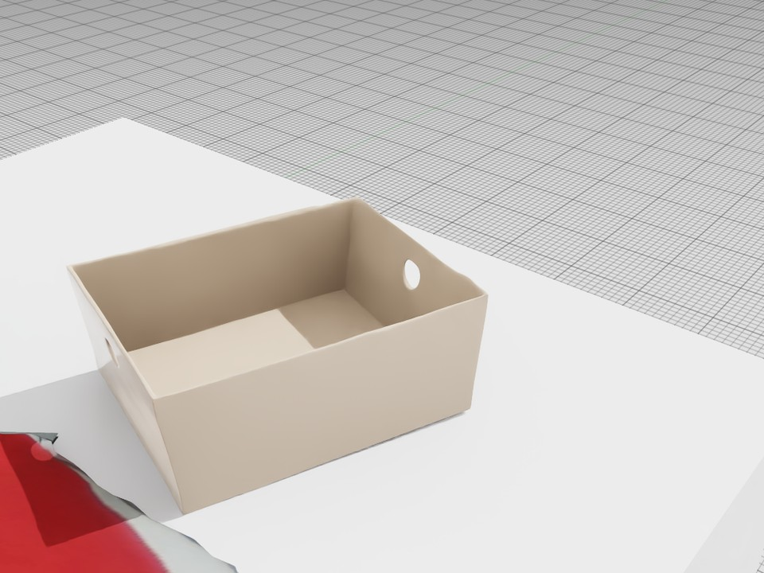
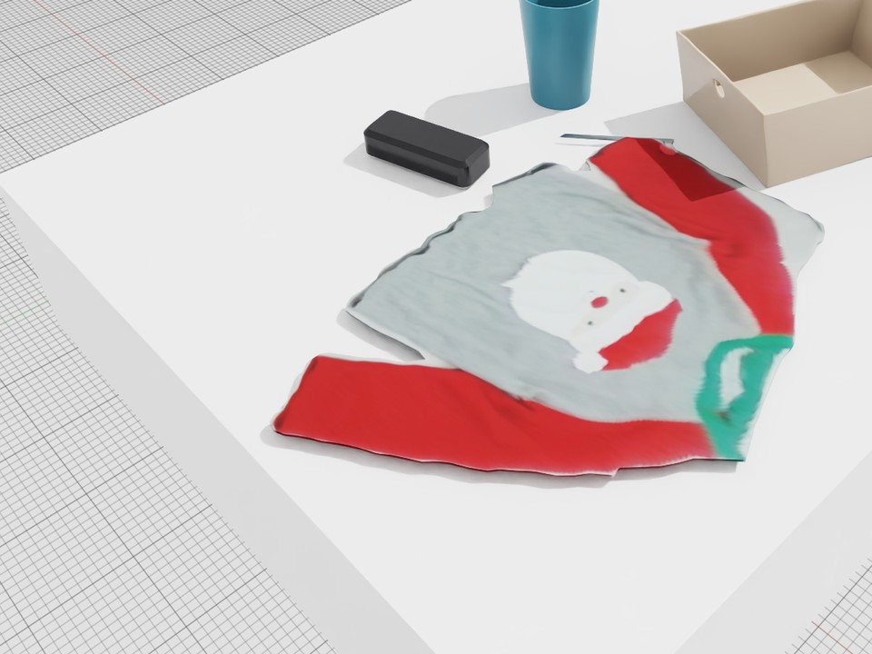
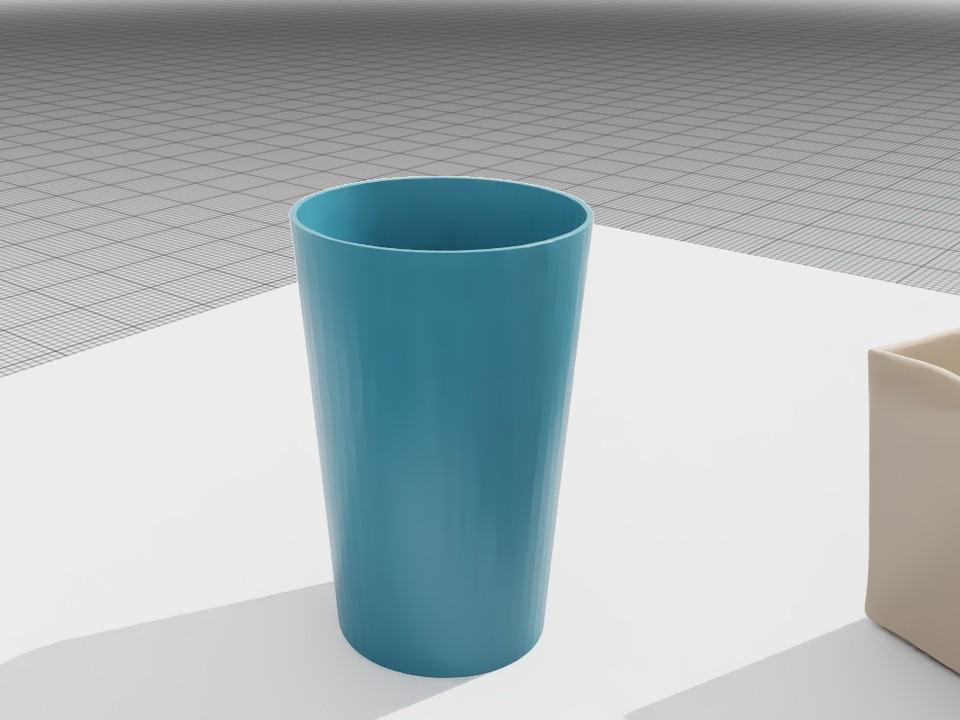
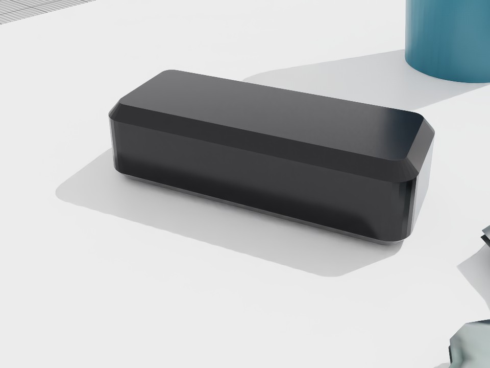
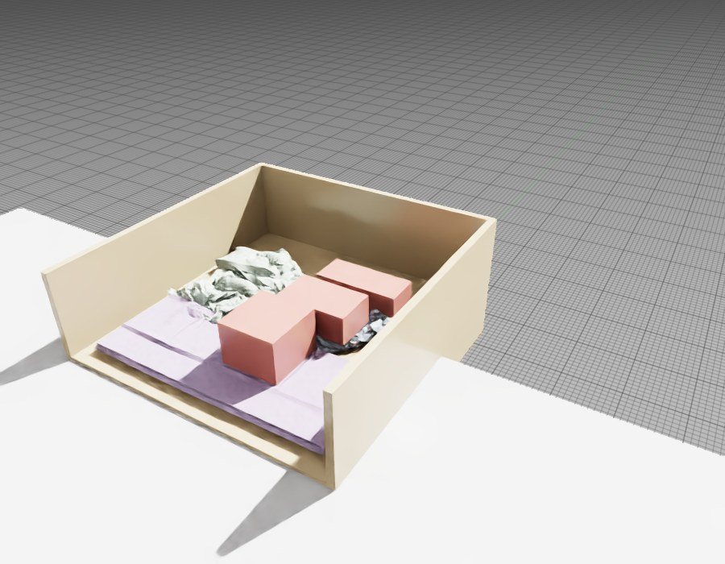

Real2Sim2Real task and motion planning for deformable and rigid objects. One RGB-D capture becomes a physics twin, the planner searches over folds, coils and rigid placements inside it, and the plan runs on a real robot arm.



Task and motion planning works when every action has a known effect. That holds for rigid objects. It does not hold for cloth or rope: where a fold lands or how a coil settles depends on the material, the starting configuration and the contacts made during the motion.
When deformable and rigid objects share a task, that uncertainty spreads. The shape a deformable object takes decides how much space, support and clearance remain for the rigid objects after it. A plan that ignores deformable dynamics can fail even when every rigid step is valid.
TwinTAMP uses a physics twin of the real scene as the planner’s effect model, so deformable outcomes and rigid placements are decided in the same search.
SAM 2 segments the capture and SAM 3D reconstructs each rigid object, placed in the robot frame from depth and checked against the photo. Cloth is simulated rather than reconstructed: a cloth model is fitted to the shirt’s measured outline and settled under gravity.





Each plan runs on a UR5e with a Robotiq Hand-E. A second capture scores the outcome with the planner’s own predicates, so every trial also tells us whether the twin predicted it.
@misc{twintamp2026,
title = {Planning Inside the Twin: Real2Sim2Real Task and Motion
Planning for Deformable and Rigid Objects},
note = {CoRL 2026 Late-Breaking Results},
year = {2026}
}